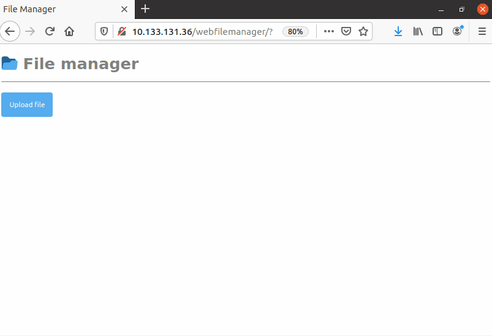

<meta charset="utf-8">
<meta name="viewport" content="width=device-width, initial-scale=1">
<script src="https://cdn.jsdelivr.net/npm/clipboard@2.0.6/dist/clipboard.min.js"></script>
<script type="module" src="/sofi/js/script.js"></script>
<link rel="stylesheet" href="/sofi/css/estil.css">

<nav></nav>
<header>
    <h1>WebFileManager</h1>

    <abstract>
        <p>Implementa un gestor d'arxius web senzill que permeti carregar, descarregar i esborrar arxius.
        </p>

        
        <p>
            Necessitaràs <a href="/setupwebserver/">tenir preparat un contenidor</a>.
        </p>
    </abstract>
</header>
<section>
    <h2>Formulari de càrrega de fitxers</h2>
    <p>Per a que l'usuari pugui carregar (<em>upload</em>) fitxers al servidor, caldrà implementar un formulari que permeti seleccionar 
        el fitxer.
    </p>
    <p>En aquest formulari cal afegir l'atribut <w>enctype=&quot;multipart/form-data&quot;</w>. Amb un camp <w>&lt;input type="file"&gt;</w> s'obrirà la finestra 
    per a seleccionar el fitxer.</p>
    <sc html>
        &lt;form enctype=&quot;multipart/form-data&quot; method=&quot;POST&quot;&gt;
            &lt;input name=&quot;<replace>nom_dada</replace>&quot; type=&quot;file&quot;&gt;
            &lt;input type=&quot;submit&quot; value=&quot;Carrega el fitxer...&quot;&gt;
        &lt;/form&gt;
    </sc>

    <p>Quan l'usuari premi el botó <w>submit</w>, el fitxer s'enviarà al servidor.</p>

    <h2>Obtenir el fitxer al servidor</h2>
    <p>Per a que el servidor obtingui el fitxer que se li envia, podem utilitzar el següent codi PHP:</p>
    <sc php>
        &lt;?php
        if(isset($_FILES['<replace>nom_dada</replace>'])){
            move_uploaded_file($_FILES['<replace>nom_dada</replace>']['tmp_name'], "<replace>directori</replace>/{$_FILES['<replace>nom_dada</replace>']['name']}");
        }
        ?&gt;
    </sc>

    <p>Caldrà substituir <replace>nom_dada</replace> pel nom que si li hagi donat al camp fitxer del formulari. I també s'haurà de 
    substituir <replace>directori</replace> pel directori del servidor on es guardarà el fitxer.</p>

    <h2>Eliminar un fitxer</h2>
    <p>Per a eliminar un fitxer es pot fer servir aquest codi PHP:</p>
    <sc php>
        &lt;?php
        if(isset($_GET['<replace>nom_dada</replace>'])){
            unlink("<replace>directori</replace>/{$_GET['<replace>nom_dada</replace>']}");
        }
        ?&gt;
    </sc>
    <p>Caldrà substituir <replace>nom_dada</replace> per el nom de la dada que s'hagi enviat a la <w>query</w>.</p>

    <h2>Llistar els fitxers</h2>
    <p>Per a mostrar la llista de fitxers es pot fer així:</p>
    <sc php>
        &lt;?php
        if ($handle = opendir(&#39;<replace>directori</replace>/&#39;)) {
            while (($file = readdir($handle))) {
                if ($file != &quot;.&quot; &amp;&amp; $file != &quot;..&quot;) {
                    echo &quot;&lt;p&gt;$file&lt;/p&gt;&quot;;
                }
            }
            closedir($handle);
        }
        ?&gt;
    </sc>
    <p>S'haurà de canviar la línia <w>echo "&lt;p&gt;$file&lt;/p&gt;";</w> per tal de mostrar cada fitxer 
    de la manera que es desitji.</p>
</section>